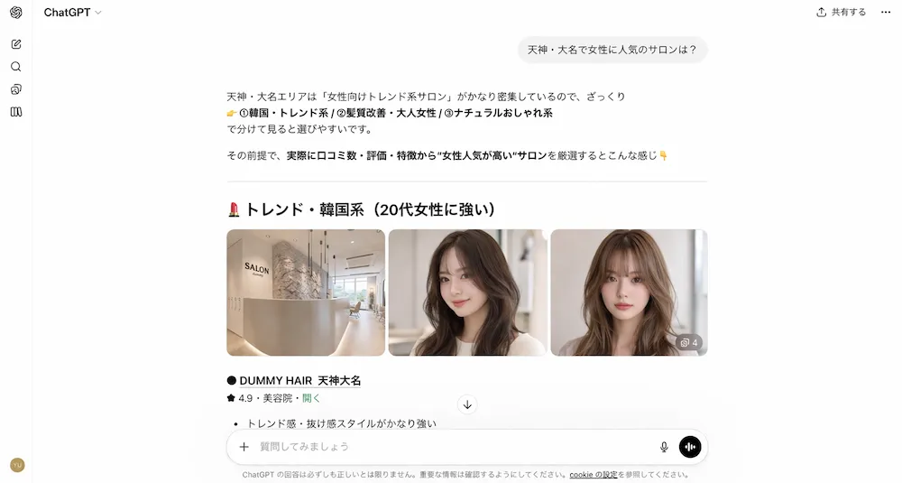
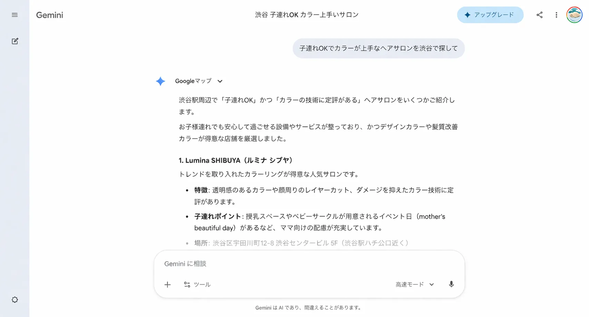

AIが、貴店を
「一番のおすすめ」に
選ぶ時代へ。
Google検索の先へ。AI検索で指名されるサロンへ。
ChatGPTやPerplexityなどのAI検索で、あなたのサロンが優先的に推奨されるための最新最適化戦略「LLMO」。
情報設計からコンテンツ制作まで、AI時代の新しい集客を一気通貫でご支援します。

検索のルールが、
変わりました。
ユーザーはもう「検索窓」だけに打ち込みません。


「このエリアでおすすめの美容室は？」と
AIに相談して店を選ぶ
AIに正しく認識されないことは、将来的に「存在しない」のと同じ。
知らないうちにAIに評価されている今、対策は急務です。
だから今、LLMO対策が必要なのです。
LLMOとは何か？
LLMO = Large Language Model Optimization
AI検索最適化
従来のSEO（検索エンジン最適化）が「検索結果の順位」を競うものだったのに対し、LLMOは「AIが回答を生成する際の参照元（おすすめ）として選ばれること」を目指す、全く新しい施策です。
Google検索での
上位表示を競う
被リンク・文字数・キーワード順位
AIの「おすすめ」に
選ばれることを目指す
AIが解釈しやすい情報設計・信頼性構築
施策の4つの柱で
「信頼できるサロン」の基盤を構築
AIに伝わる
データ構造の最適化
AIが正確に貴店の情報を読み取れるよう、裏側のデータ構造を整理します。構造化データ・メタ情報・コンテンツの論理的配置を最適化し、AIが「このサロンは◯◯が得意」と正しく認識できる土台を作ります。
- 構造化データ（Schema.org）の実装
- メタ情報・OGP・内部リンク整備
- AIが参照しやすいコンテンツ論理構造の設計
Webサイトの
「参照性」向上
AIが引用しやすい、論理的で明快なサイト構造へとアップデートします。「どんな人向けのサロンか」「何が強みか」をAIが一読で理解できるよう、ページ設計・情報の優先順位・文章構造を見直します。
- サイト構造・ページ設計の見直し
- 強み・専門性の明文化
- AIが引用しやすい文章構造への改善
AIの回答を誘導する
コンテンツ制作
ユーザーの悩みに対する「回答」となる良質な情報を蓄積します。「くせ毛でもまとまるスタイルが得意」「産後の頭皮ケアを熟知」など、AIが「この専門家に聞いてみて」と引用したくなるコンテンツを設計します。
- ユーザーの悩み・質問を軸にしたコンテンツ戦略
- AIに引用されやすい専門性の言語化
- ブログ・FAQ・専門コラムの設計
Web上の「評判」の
紐付け
外部メディアやSNSと連携し、AIが「ここは有名で評判が良い」と判断する材料を作ります。ホットペッパービューティ・Google・SNSの情報を一貫性を持って整備し、AIの信頼スコアを引き上げます。
- 外部プラットフォームの情報統一（NAP対策）
- 口コミ・メディア言及の活用戦略
- SNSとWebの情報一貫性の確保
LLMO対策前後の変化
競合サロンはAIで紹介されるのに、自社は表示されない
「◯◯エリアのおすすめ」でAIに名前が挙がるように
「ショートカットが得意」という強みがAIに伝わっていない
「ショートが得意なサロン」の質問でAIが指名するように
新規集客がGoogleマップと紹介だけに依存している
AI経由で「話を聞いてから来た」質の高い新規客が増加
導入実績
+40%
AI検索経由の流入が支援開始初月から増加
※1社実績。効果は店舗規模・競合状況・取り組み内容により異なります。
早期に取り組んだサロン様では、AIからの指名検索という「質の高い新規客」の獲得に成功しています。
SEO経由と異なり、AI経由の来店客は「相談してから選んだ」ため、予約率・リピート率が高い傾向があります。
他の支援との違い
| 比較項目 | 一般的なSEO会社 | MEO会社 | 当社のLLMOコンサル |
|---|---|---|---|
| アプローチ | キーワードの順位獲得 | Googleマップの星評価向上 | AIアルゴリズムの理解と推奨獲得 |
| 施策の核心 | 被リンク・文字数・速度 | 口コミ獲得・写真最適化 | AIが解釈しやすい情報設計 |
| 対応プラットフォーム | Google検索のみ | Googleマップのみ | ChatGPT・Perplexity・Geminiなど全AI |
| 将来性 | 検索エンジンの変化に左右される | マップ利用者のみ対象 | AI検索時代に不可欠な資産構築 |
| 美容業界特化 | × | △ | ✓ 美容業界の文脈で最適化 |
料金プラン
LLMOスタートアッププラン
50,000円〜
月額（税込 55,000円〜）
サイトの現状や対策範囲（スコープ）により変動いたします。
AI検索診断・情報設計・サイト改善提案・月次レポートを含みます。
コンテンツ制作・外部参照施策まで含む「フルコミットプラン」もご用意。
詳細はお問い合わせください。
導入の流れ
— シンプルな3ステップ —
AI検索診断
現在のAI検索（ChatGPT・Perplexity・Geminiなど）で貴店がどう表示されているか調査します。「表示されているか」「競合と比べてどう認識されているか」「何が不足しているか」を明確化します。診断結果は初回面談でご説明します。
戦略策定
貴店の強み・スタイル・ターゲット顧客を整理し、「AIにどう伝えるか」のプランニングを行います。既存サイトを活かしながら、最小コストで最大効果を出す施策順位を決定します。
実装・検証
実務レベルでの改修とコンテンツ投入を開始します。月次でAI検索上の変化を計測・レポートし、PDCAを回しながら継続改善します。最短で初月から成果が出るケースもあります。
よくある質問
MEO（Googleマップ対策）とは何が違うのですか？
MEOはGoogleマップ上の表示・口コミを改善する施策です。LLMOはChatGPT・Perplexity・GeminiなどのAIチャット検索で、貴店が「おすすめ」として回答される確率を高める施策です。ユーザーがAIに「どのサロンに行こうか」と相談する場面でヒットできるのがLLMOです。MEOと組み合わせることで相乗効果が生まれます。
効果が出るまでにどのくらいの期間がかかりますか？
最短で初月から成果が出ます。取り組み内容や競合状況によりますが、情報設計やサイト改修を行った場合、1ヶ月目からAI検索での表示率や言及内容に変化が現れるケースがあります。継続的な効果の積み上げには3〜6ヶ月を推奨しています。
現在のホームページを大幅に作り直す必要がありますか？
ありません。既存のWebサイトに対して、必要な対策をご提案します。大規模なリニューアルなしに、構造データの追加・コンテンツの追記・ページ構成の見直しなど、段階的な改善から始めることができます。
ホットペッパービューティに掲載していれば大丈夫ではないですか？
ホットペッパービューティはAIの参照元の一つですが、それだけでは不十分です。AIは複数の情報源を統合して「おすすめ」を判断します。自社Webサイト・SNS・口コミサイト・ブログ記事など、複数箇所から一貫した専門性・信頼性の情報が発信されていることが重要です。
小さなサロン（一人オーナー・個人店）でも効果がありますか？
むしろ小規模サロンにこそ有効です。大手チェーンと検索順位を競うSEOとは異なり、LLMOは「特定の悩みへの専門性」「特定エリアでの信頼性」で評価されます。「産後ケアが得意な個人サロン」「特定の技術に特化した一人オーナー店」など、ニッチな強みを持つ店舗ほどAIに正確に認識されやすくなります。
まずは、AIが貴店をどう評価しているか知ることから。
AI検索の現状について
話を聞いてみる
診断は無料です。現状把握だけでも構いません。
AI検索時代に備えた最初の一歩を、MIRAINAと一緒に踏み出しましょう。